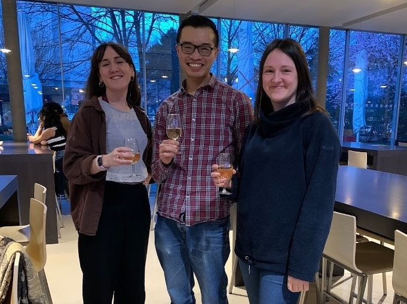
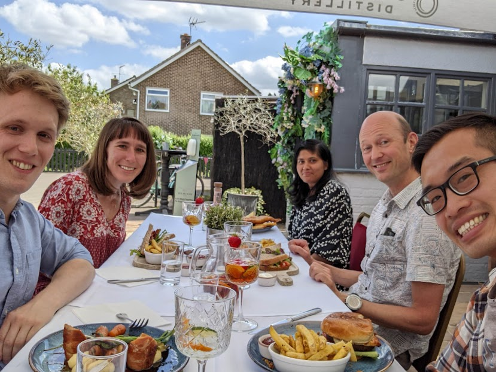

Sebastian Rutherford Colmenares
Postdoctoral Researcher (2025 -)PhD University of Cambridge
Tau-lepton tagging and performance
Amelia Stevens
Graduate Researcher (2025)BS Haverford College
ITk testing and quality control analysis


Our group enjoys a long-standing collaboration with the DESY group led by Lydia Beresford with Savannah Clawson. Our current analysis efforts also collaborate with the groups of Freiburg (Valerie Lang), Sheffield (Kristin Lohwasser), and Berkeley Lab (Angira Rastogi, Simone Pagan Griso).
More broadly, we work within the ATLAS Standard Model and Inner Tracker groups. ITk strip detector production is at Brookhaven National Laboratory and CERN, where our group is ramping up collaboration.